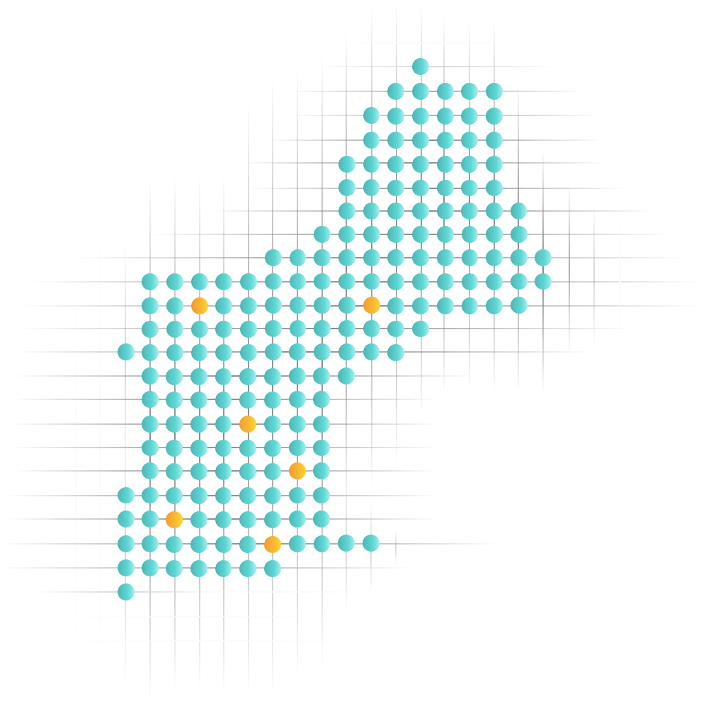

NEW.Mech is a one-day workshop that aims to bring together the
New England
Mechanics community to share the latest
advancements in the field. As in
past years,
this workshop is completely free of charge.
Date: Friday, Oct 30th, 2026
Time: 1pm–6pm
Location: MIT Green building
54-100, 21 Ames Street, Cambridge, MA 02139
Register here by Friday, Oct 23 2026
Updates will be communicated here and via
the NEW.Mech mailing list.
The workshop will consist of three keynote talks from new faculty and two sessions of lightning talks (2-3 minute oral presentations).
Schedule:
1:00pm-2:00pm NEW.Mech social and registration: cookies & coffee/tea at Green building atrium
2:00pm-2:05pm Opening remarks
2:05pm-2:35pm
Connor McCann, WPI, "Mechanics of Hybrid Rigid-Soft Structures Inspired by Stingray Skeletons"
2:35pm-3:20pm Lightning talks — Session A
3:20pm-3:30pm Break
3:30pm-4:00pm
Shabnam Raayai, Boston University, "Dynamics of bio-inspired V flight formations"
4:00pm-4:30pm
Andrew Akerson, MIT, "Optimal Design for Emerging Technologies"
4:30pm-5:30pm Lightning talks — Session B
5:30pm Closing remarks & pizza
Lightning talks - Session A
1. Leon Kamp, "Reprogrammable Origami Using Multistable Hinges"
2. Rafi Bin Dastagir, "Snap Delamination Interplay in Balloon Actuators"
3. Wenfeng Liu, "Sequential Deformations in Pressurized Curved Shells"
4. Jaafar Alaswad, "Mechanical Role of Wrinkles in Cerebral Arteries"
5. Tyler Mu, "Mechanically Enforcing Periodic Boundary Conditions for Soft Material Characterization"
6. Surya Sidhartha Kolluri, "Dynamic Characterization of Soft Tissues via Inertial Microcavitation Rheometry"
7. Zhiren Zhu, "Probing Soft Materials with Collapsing and Migrating Cavities"
8. Ali Saeedi, "Elastic Interaction of Cavities: Effects on the Cavitation and the Energy Landscape in Soft Solids"
9. Michael Galuska, "An Analytical and Experimental Investigation of Near-Field Bubble Interaction with Compliant Structures"
10. Xu Zhang, "Fractured Flows: Bursting Bubbles in Dense Suspensions"
11. Nirmal Dipakbhai Rajpopat, "Thermal Annealing and Spatial Correlations in Cyclically Sheared Amorphous Matter"
12. David Farrell, "What to Wear in a Wind Tunnel? Fluid-Metamaterial Interactions in Programmable Textiles"
13. Lebo Molefe, "Wake Instabilities in Liquid Crystals"
14. Quan Nguyen, "Investigating the Mechanics of Microtissue Remodeling"
15. Chenghai Li, "Glowing Living Materials"
Lightning Talks - Session B
1. Hongrui Chen, "Neural Network for Topology Optimization"
2. Juner Zhu, "Mechanics Informatics: A Paradigm for Efficiently Learning Constitutive Models"
3. Erfan Hamdi, "FEM-Bench: A Structured Scientific Reasoning Benchmark for Evaluating Code-Generating LLMs"
4. Andrew Bagnoli, "Finite Element Modeling of Elastomeric Foams"
5. Soroush Soltani, "Dual Topological Channels in a Programmable Mechanical Metamaterial"
6. Peerasait (Jeffrey) Prachaseree, "Information Propagation in Elastic Solids"
7. Rachel Sun, "Tuning Ultrasound Wave Propagation in Microscale Acoustic Metamaterials with Mechanical Deformation"
8. Jiatai Sun, "Adhesives with a Thickness Smaller than the Fractocohesive Length Enhance Adhesion"
9. Rishabh, "Crack Propagation in Swelling Gels"
10. Helen Read, "Controlling & Guiding Dynamic Failure of Knits"
11. Enrique M. del Castillo, "Computational Modeling of Crack Steering via Out-of-Plane Lateral Constraints"
12. Siddharth Jain, "Failure Mechanisms of Square Prismatic Sections under Hydrostatic Loading"
13. Chenjie Gan, "Thermo-Mechanics of Dendrite-Growth Resistance in Solid State Electrolytes"
14. Junning Jiao, "Giving Batteries a Sense of Touch"
15. Joseph Bonavia, "How Stretch Stops a Polymerization Front: A Molecular Route to Mechanical Quenching"
16. Jacob Garrett, "Manufacturing Complex Structures through Interfacial Self-Organization"
17. John Farah, "Rapid Wafering of Wide Bandgap Substrates"
Questions? Contact
Mrityunjay Kothari or
Abigail Plummer
We thank MIT's Civil & Environmental Engineering and Mechanical Engineering Departments for their support of this workshop!